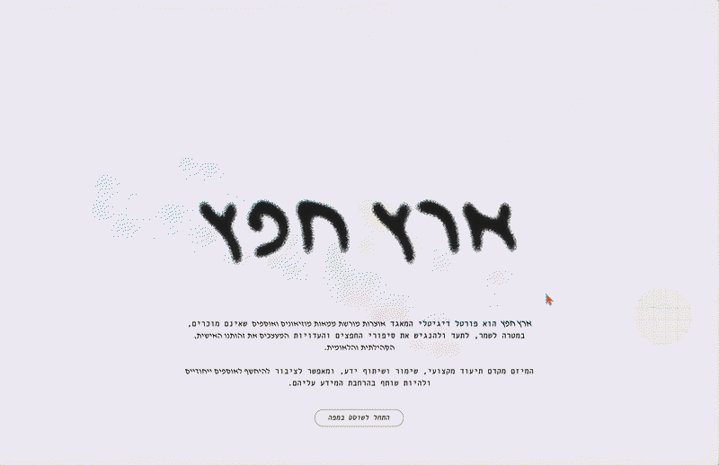

A new concept for an existing website, Eretz Hefetz; a digital archive that brings together collections of objects from across Israel. The redesign offers a new way to explore these objects, using the map of Israel as the main navigation tool. Users can wander through the map, discover collection sites, and explore their objects, creating a more curious and engaging browsing experience.
[For the optimal viewing experience, it is recommended to open the prototype in the Figma application, as video playback and certain interactions may be limited or inconsistent when viewed in a web browser.]
Bezalel Academy of Arts and Design